Ricette Selvatiche
Ricette Selvatiche è un archivio di erbe mangerecce, ricordi profumati e ricette casalinghe.

Asparagina
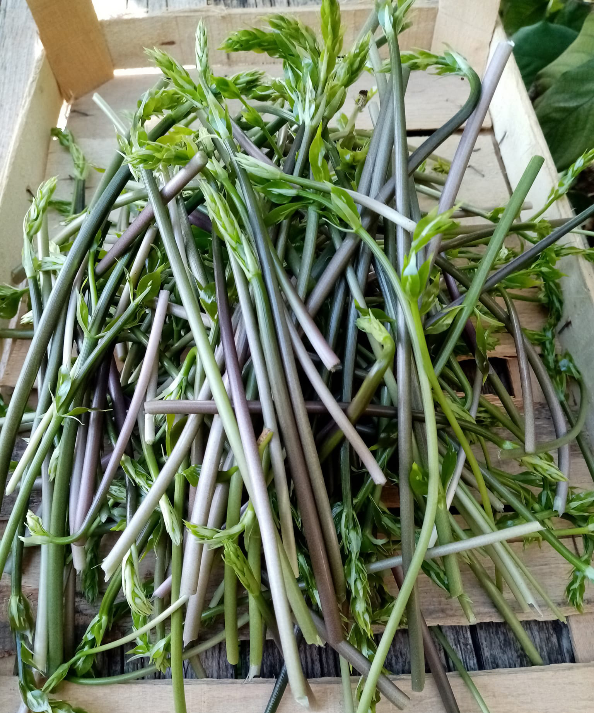
Asparago Pungitopo

Borragine
Giovanni, 92

Calendula

Camomilla
Annarosa, 24

Cardo Selvatico
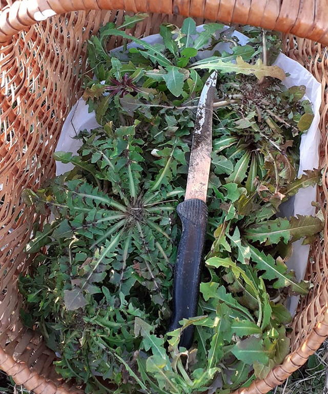
Cicoria

Erba Cipollina
Matilde, 53
Finocchietto
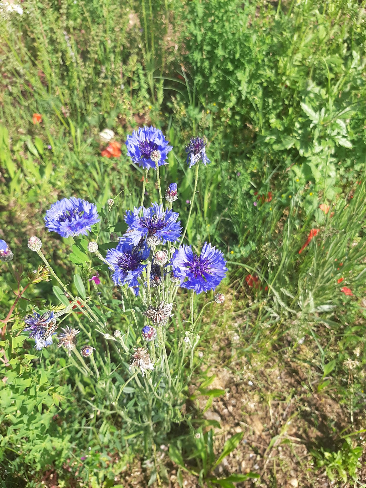
Fiordaliso
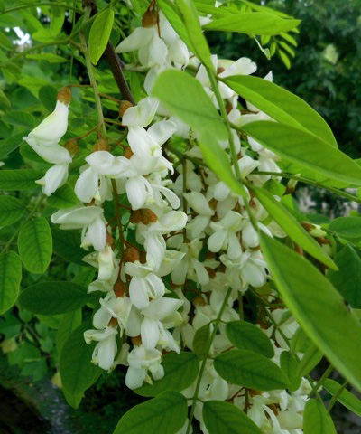
Gaggia
Gianmatteo, 18
Genziana

Iperico
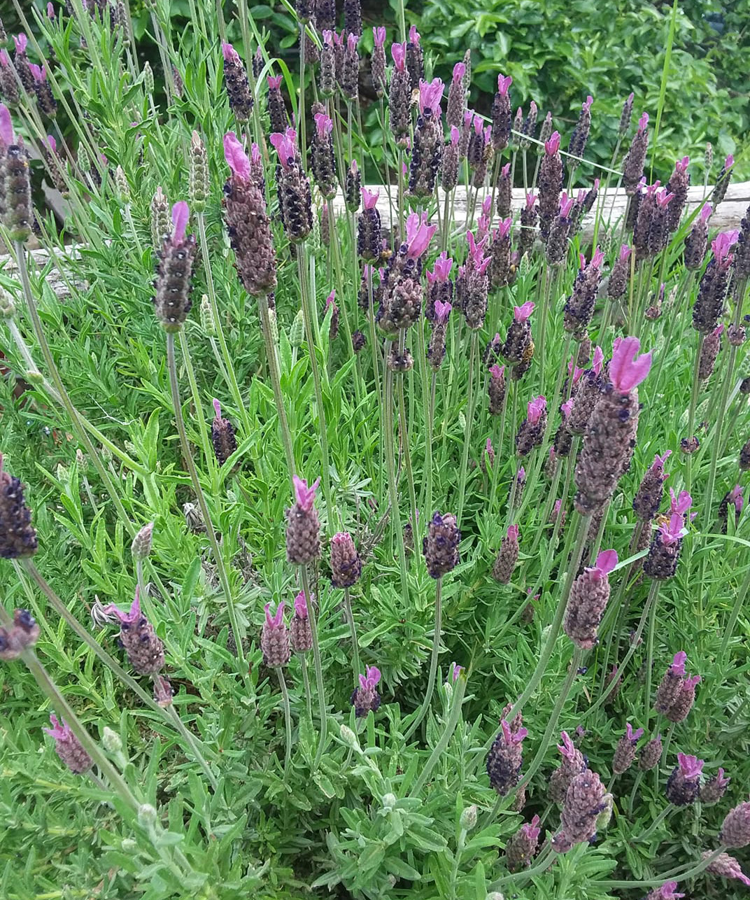
Lavanda Selvatica
Sara, 23
Luppolo Selvatico/Lüvertin
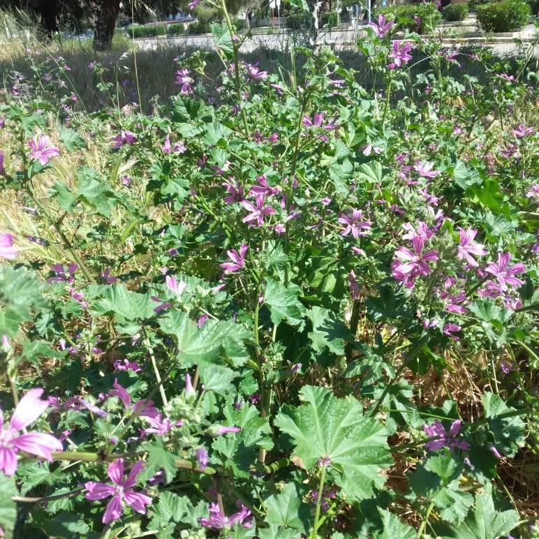
Malva/Riundela
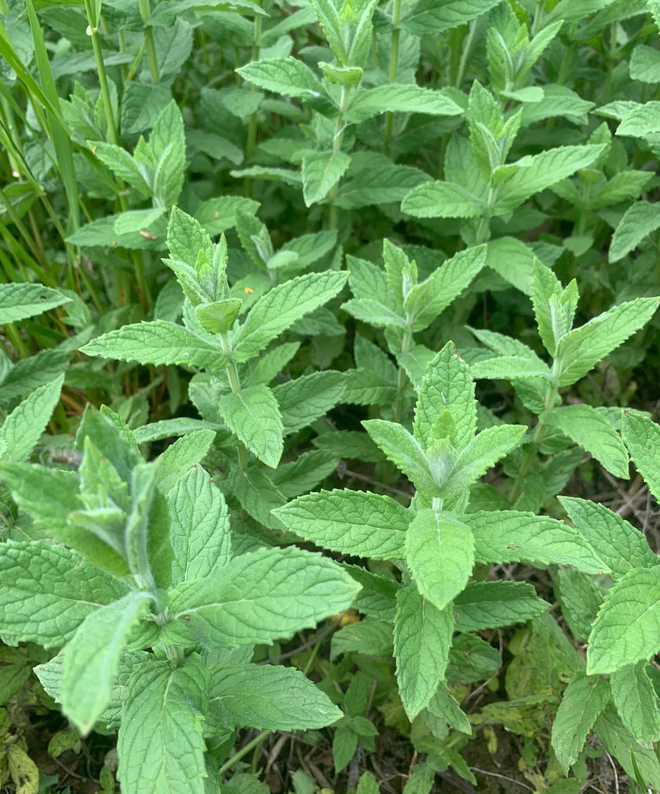
Menta
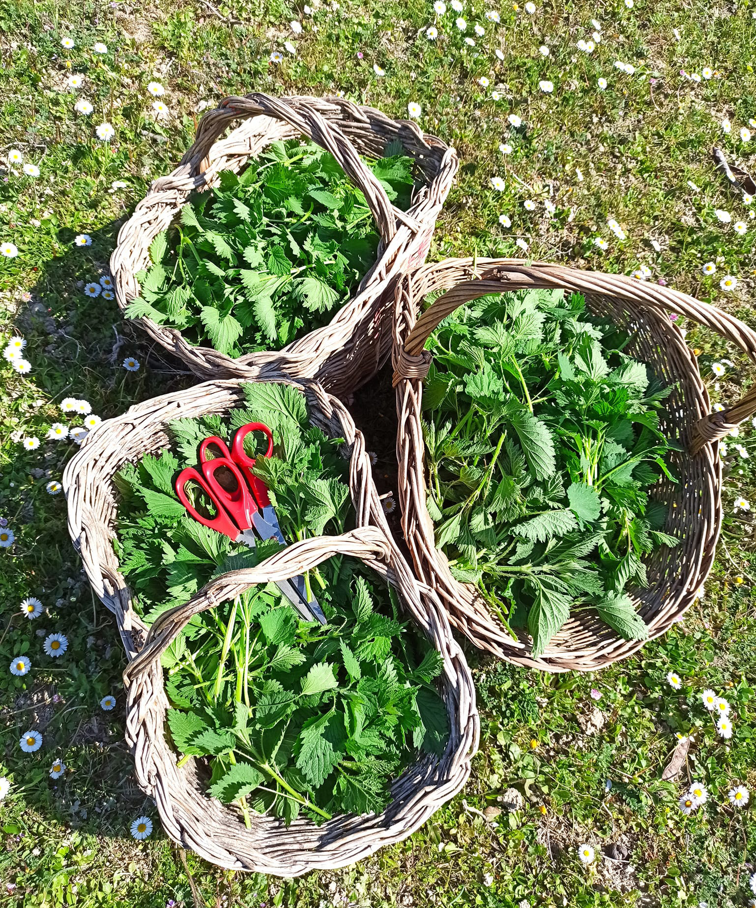
Ortiche

Papaveri
Bruna, 80
Pino Mugo
Sara, 24

Salvia Selvatica
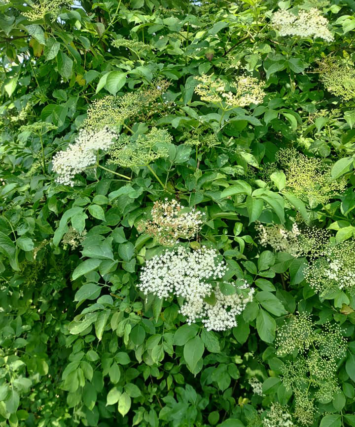
Sambuco
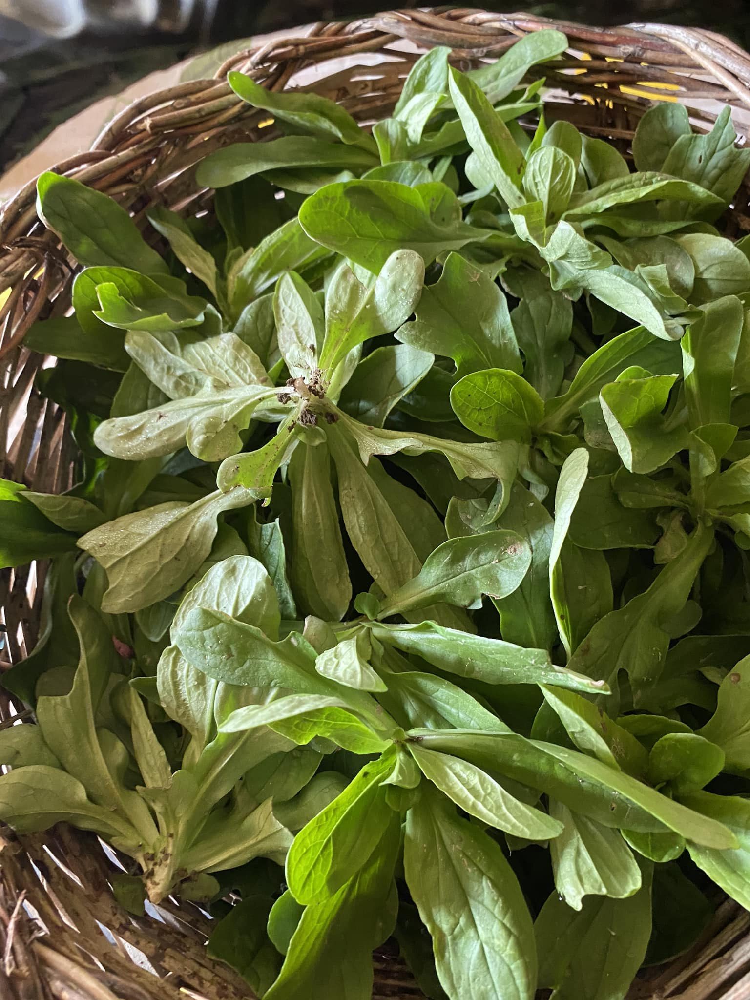
Songino/Sarzet
Tiziana, 57
Spinacio Selvatico
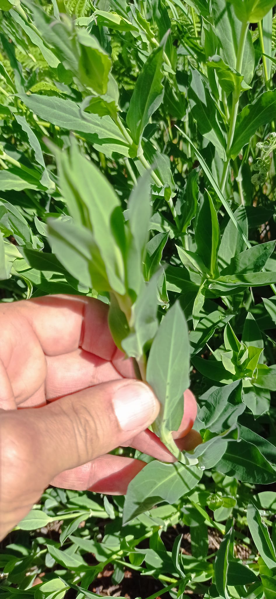
Stridoli/Scruzet
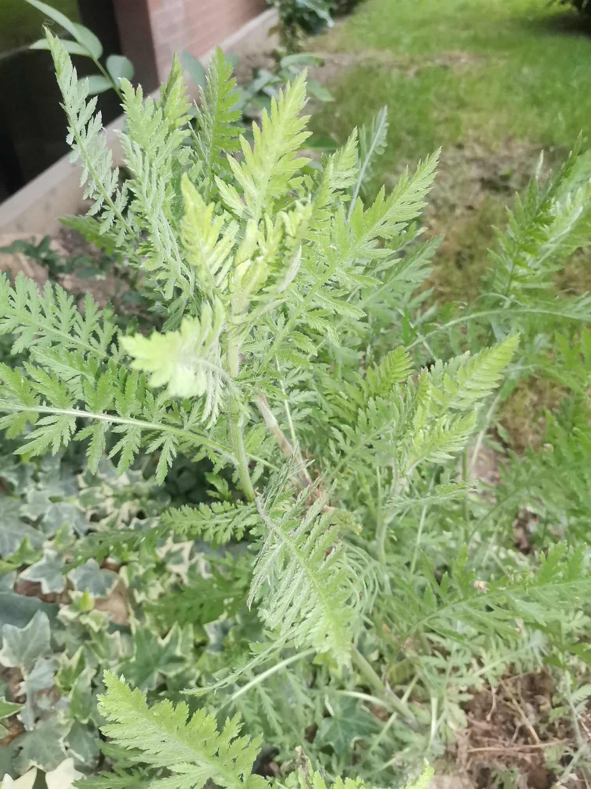
Tanaceto/Archibus
Alessandra, 55
Tarassaco/Girasù
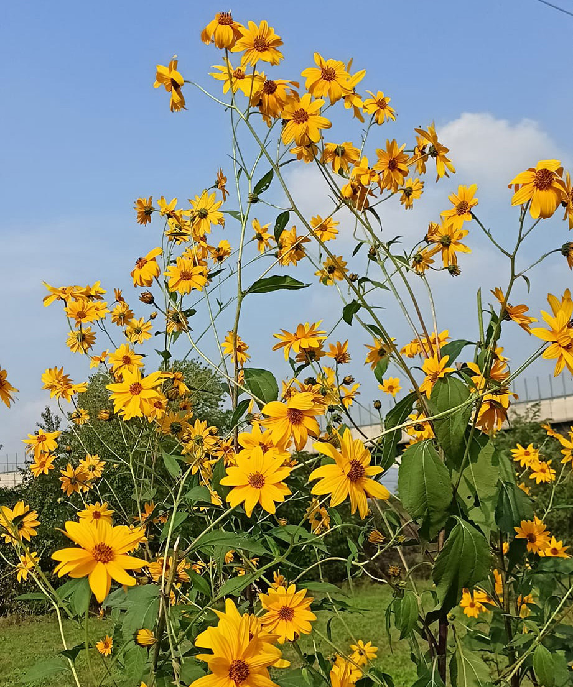
Topinambur
Lucia, 60
Valeriana